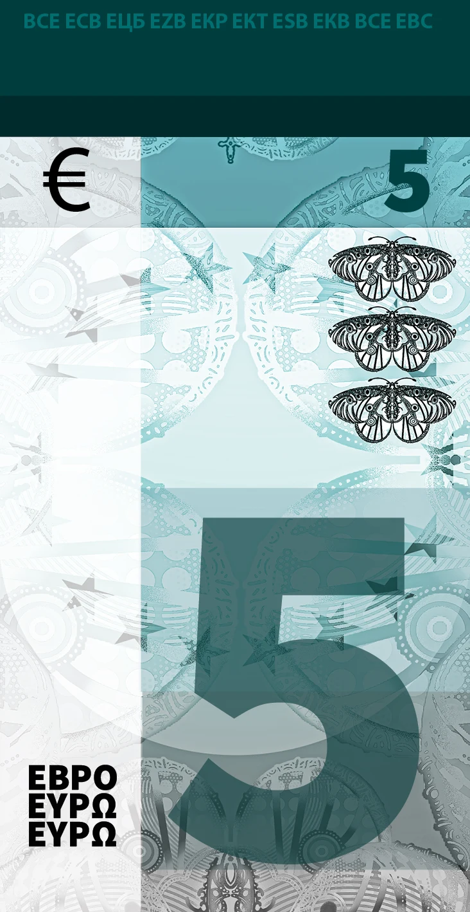
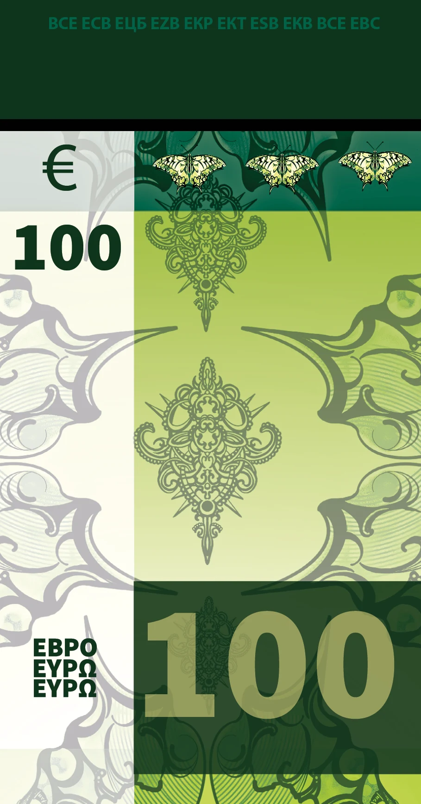

Digital work
Euro banknote series
For this project I redesigned three euro banknotes. The challenge was to give every note a character of its own, while the three still read as one family, and as real euro money.
I drew each butterfly myself in Procreate, in my own illustration style, and built the notes around them.
Why butterflies
To me, butterflies feel free. They are light, they cross borders without noticing and they are anything but aggressive. A European banknote should stand for peace and freedom, so a butterfly felt like the most honest symbol I could give it.
Front and back
I designed the front in landscape and the back in portrait. That way the two sides never feel like copies of each other, while the shared colours, patterns and butterflies make it clear they belong together.
The euro details
Everything that makes a note a euro is still there: the European flag with its stars, the value and the word euro in three alphabets. Underneath, squares overlap and fade into each other, supporting the illustration without taking over.
€5 · Notre-Dame de Paris
The Apollo
The €5 note got the Apollo butterfly. Its wings are white and grey with soft black markings: cool colours that sit naturally in the icy blue-green of the five.
Behind the butterflies the towers and rose window of Notre-Dame de Paris fade into the background, so the monument is present without competing with the illustration.
€50 · Colosseum, Rome
The peacock butterfly
The original €50 is orange and warm, so it needed a warm butterfly. The peacock butterfly is full of warm tones and strong contrasts, with the striking eye spots on its wings.
The Colosseum in Rome rises behind it in the same glowing light, which makes this the warmest note of the series.
€100 · Eiffel Tower, Paris
The swallowtail
The €100 got the swallowtail. Its wings are wide and end in sharp points at the bottom, a shape that fits the long format of the note perfectly.
The Eiffel Tower stands behind the butterflies, framed by the stars of the European flag.
How it was made
1. Procreate
Every butterfly started as a drawing in Procreate. I drew each species by hand in my own illustration style, line by line, so the wings carry my handwriting instead of a photo.
2. Photoshop
With the drawings ready, I built the design in Photoshop: placing the butterflies, layering the monuments and creating the faded, blurred shapes that give the notes their depth.
3. Lightroom
In Lightroom I adjusted the colours of every note, fine-tuning the palette and sharpening the details so each value has its own clear colour.
4. InDesign
Everything came together in InDesign. There I added the typography, the European flag and a few extra shapes as clean vector work, for a perfectly sharp result.